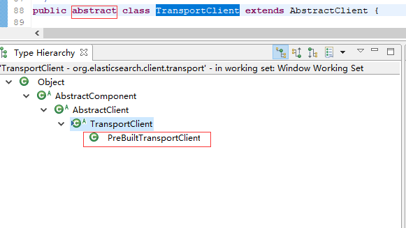

创建maven工程 添加坐标 最好跟服务器elasticsearch一致
<dependency>
<groupId>org.elasticsearch.client</groupId>
<artifactId>transport</artifactId>
<version>6.2.4</version>
</dependency>
<groupId>net.sf.json-lib</groupId>
<artifactId>json-lib</artifactId>
<version>2.4</version>
<classifier>jdk15</classifier>
</dependency>
java程序连接elasticsearch通过TransportClient类

TransportClient类是一个抽象类 具体的实现是PreBulitTransportClient
public class TestEs {
private static String host="192.168.88.133"; // 服务器地址
private static int port=9300; // 端口
/**
* 创建客户端连接到elasticsearch服务器
*/
@Test
public void teseConnection() throws Exception{
TransportClient client = new PreBuiltTransportClient(Settings.EMPTY);
client .addTransportAddress(new TransportAddress(InetAddress.getByName(TestEs.host), TestEs.port));
System.out.println(client);
client.close();
}
}
public class TestEs {
private static String host="192.168.88.133"; // 服务器地址
private static int port=9300; // 端口
private TransportClient client=null;
/**
* 获取连接
* @return
*/
@Before
public void getCient()throws Exception{
client = new PreBuiltTransportClient(Settings.EMPTY)
.addTransportAddress(new TransportAddress(InetAddress.getByName(TestEs.host), TestEs.port));
System.out.println(client);
}
/**
* 关闭连接
* @param client
*/
@After
public void close(){
if(client!=null){
client.close();
}
}
/**
* 添加索引
*/
@Test
public void testAdd()throws Exception{
IndexResponse response =client.prepareIndex("hello", "es", "1")
.setSource(XContentFactory.jsonBuilder()
.startObject()
.field("name", "zhangsan")
.field("birthday", new Date())
.field("age", 20)
.endObject()
)
.get();
System.out.println("索引名称："+response.getIndex());
System.out.println("类型："+response.getType());
System.out.println("文档ID："+response.getId()); // 第一次使用是1
System.out.println("当前实例状态："+response.status());
}
}
ElasticSearch提供了根据索引名称，类别，文档ID来获取数据
@Test
public void testGet(){
GetResponse getResponse=client.prepareGet("hello", "es", "1").get();
System.out.println(getResponse.getSourceAsString());
}
ElasticSearch提供了根据索引名称 类别 文档ID来修改数据 修改的设置数据可以是Map son串等
@Test
public void testUpdate() {
Map<String, Object> map = new HashMap<String, Object>();
map.put("name", "lisi");
map.put("birthday", new Date());
map.put("age", "25");
UpdateResponse response = client.prepareUpdate("hello", "es", "1").setDoc(map).get();
System.out.println("索引名称：" + response.getIndex());
System.out.println("类型：" + response.getType());
System.out.println("文档ID：" + response.getId()); // 第一次使用是1
System.out.println("当前实例状态：" + response.status());
}
ElasticSearch提供了根据索引名称 类别 文档ID来删除数据
@Test
public void testDelete(){
DeleteResponse response=client.prepareDelete("hello", "es", "1").get();
System.out.println("索引名称："+response.getIndex());
System.out.println("类型："+response.getType());
System.out.println("文档ID："+response.getId()); // 第一次使用是1
System.out.println("当前实例状态："+response.status());
}